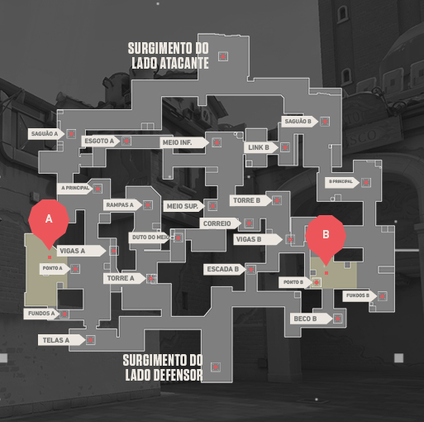

Se quiser avançar, é preciso subir. Separados por uma área central elevada, dois pontos fornecem movimentação rápida com duas cordas ascendentes. Cada ponto tem uma torre imponente que é vital para o controle da área. E não se esqueça: mantenha os olhos abertos e focados nas áreas elevadas antes que tudo vá pelos ares.